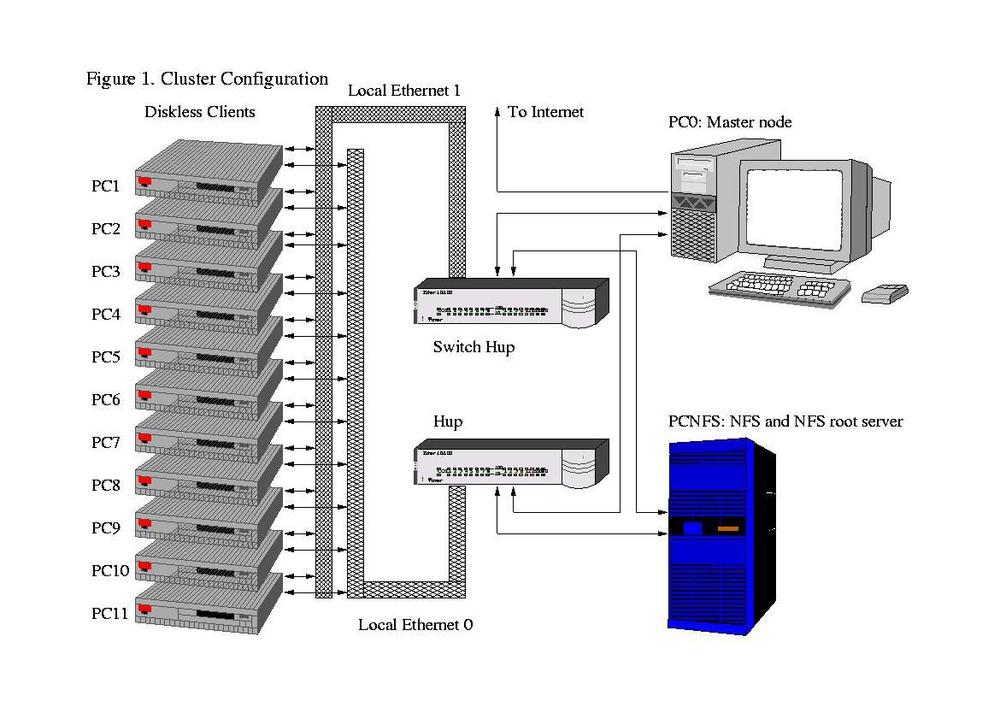
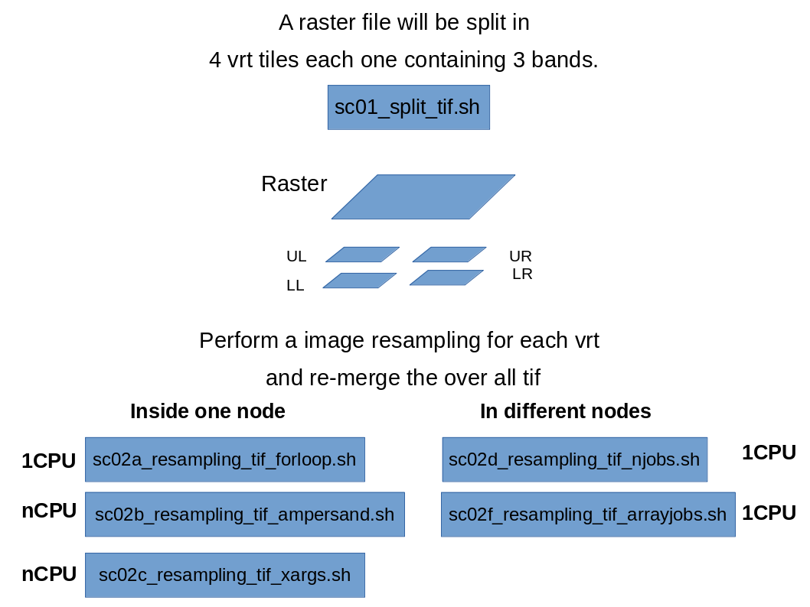

Geocomputation at High Performance Computing Cluster (HPC)

Prepare your working environment.
create folders to save sbatch jobs standard outputs and standard errors
cd
mkdir /home/$USER/stdout/
mkdir /home/$USER/stderr
Building up some specific alias and save to $HOME/.bashrc:
emacs -nw $HOME/.bashrc # or use vi $HOME/.bashrc
and copy paste the following lines
# create alias
alias myq='squeue -u $USER -o "%.9F %.8K%.4P%.50j %3D%2C%.8m %.1T %.5M %.5l %.S %R"'
alias err='ll -rt /home/$USER/stderr/*'
alias errl='ll -rt /home/$USER/stderr/* | tail '
alias errlless=' less $(ls -rt /home/$USER/stderr/* | tail -1 ) '
alias errlmore=' more $(ls -rt /home/$USER/stderr/* | tail -1 ) '
alias out='ll -rt /home/$USER/stdout/*'
alias outl='ll -rt /home/$USER/stdout/* | tail '
alias outlless=' less $(ls -rt /home/$USER/stdout/* | tail -1 ) '
alias outlmore=' more $(ls -rt /home/$USER/stdout/* | tail -1 ) '
# sw setting
export PATH=/project/geocourse/Software/bin:$PATH
export EB_PYTHON=python3.9
export PYTHONPATH=/project/geocourse/Software/lib/python3.9/site-packages:$PYTHONPATH
module use /project/geocourse/Software/easybuild/modules/all
save emacs and close it. Run source to re-load the $HOME/.bashrc
source $HOME/.bashrc
Now that the working environment is ready we can submit jobs to the slurm queue. Let’s first monitoring what is already running.
Status of the jobs in slurm can be seen by:
squeue --all
sacct
sinfo
Resampling an image

Download raster dataset
The file http://www.spatial-ecology.net/ost4sem/exercise/geodata/cloud/SA_intra.tif

mkdir /home/$USER/glad_ard
cd /home/$USER/glad_ard
wget http://www.spatial-ecology.net/ost4sem/exercise/geodata/cloud/SA_intra.tif
will be used for the following scripts.
Download scripts
mkdir $HOME/scripts
cd $HOME/scripts
wget https://raw.githubusercontent.com/selvaje/SE_data/master/exercise/hpc01_split_tif.sh
wget https://raw.githubusercontent.com/selvaje/SE_data/master/exercise/hpc02a_resampling_tif_forloop.sh
wget https://raw.githubusercontent.com/selvaje/SE_data/master/exercise/hpc02b_resampling_tif_ampersand.sh
wget https://raw.githubusercontent.com/selvaje/SE_data/master/exercise/hpc02c_resampling_tif_xargs.sh
wget https://raw.githubusercontent.com/selvaje/SE_data/master/exercise/hpc02d_resampling_tif_njobs.sh
wget https://raw.githubusercontent.com/selvaje/SE_data/master/exercise/hpc02e_resampling_tif_arrayjobs.sh
The tif file will be divided in 4 vrt tiles each one containing 1 band. Each vrt will be then used in the following scripting procedures.
hpc01_split_tif.sh: split the raster in 4 tiles
sbatch /project/geocourse/Software/scripts/hpc01_split_tif.sh
hpc01_split_tif.sh
#!/bin/bash
#SBATCH -p normal
#SBATCH --reservation=geo_course_cpu
#SBATCH -J hpc01_split_tif.sh
#SBATCH -N 1 -c 1 -n 1
#SBATCH -t 1:00:00
#SBATCH -o /home/geocourse-teacher01/stdout/hpc01_split_tif.sh.%J.out
#SBATCH -e /home/geocourse-teacher01/stderr/hpc01_split_tif.sh.%J.err
#SBATCH --mem=500
#### sbatch /project/geocourse/Software/scripts/hpc01_split_tif.sh
module load GDAL/3.3.2-foss-2021b
IN=/project/geocourse/Data/glad_ard
OUT=/home/$USER/glad_ard
mkdir -p $OUT
gdal_translate -of VRT -srcwin 0 0 2940 4200 $IN/SA_intra.tif $OUT/SA_intra_UL.vrt
gdal_translate -of VRT -srcwin 0 4200 2940 4200 $IN/SA_intra.tif $OUT/SA_intra_UR.vrt
gdal_translate -of VRT -srcwin 2940 0 2940 4200 $IN/SA_intra.tif $OUT/SA_intra_LL.vrt
gdal_translate -of VRT -srcwin 2940 4200 2940 4200 $IN/SA_intra.tif $OUT/SA_intra_LR.vrt
hpc02a_resampling_tif_forloop.sh: process 4 tiles in one node using 1 cpu with the bash for loop
This is the easiest procedure to perform a geocomputation operation. Lunch a job that use a normal for loop to iterate on the 4 tiles. After the iterations (resampling) the for tiles can be re-merged by gdalbuildvrt followed by gdal_translate.
sbatch /gpfs/loomis/home.grace/$USER/geocomputation/scripts/hpc02a_resampling_tif_forloop.sh
hpc02a_resampling_tif_forloop.sh
#!/bin/bash
#SBATCH -p normal
#SBATCH -J hpc02a_resampling_tif_forloop.sh
#SBATCH -N 1 -c 1 -n 1
#SBATCH -t 1:00:00
#SBATCH -o /home/geocourse-teacher01/stdout/hpc02a_resampling_tif_forloop.sh.%J.out
#SBATCH -e /home/geocourse-teacher01/stderr/hpc02a_resampling_tif_forloop.sh.%J.err
#SBATCH --mem-per-cpu=8000
#### sbatch /project/geocourse/Software/scripts/hpc02a_resampling_tif_forloop.sh
module load GDAL/3.3.2-foss-2021b
IN=/project/geocourse/Data/glad_ard
OUT=/home/$USER/glad_ard
mkdir -p $OUT
rm -f $OUT/SA_intra_res.tif $OUT/stack.vrt $OUT/SA_intra_LL_res.tif $OUT/SA_intra_LR_res.tif $OUT/SA_intra_UL_res.tif $OUT/SA_intra_UR_res.tif # remove the outputs
echo resampling the SA_intra_??.vrt files within a for loop
for file in $OUT/SA_intra_??.vrt ; do
echo processing $file
filename=$(basename $file .vrt)
GDAL_CACHEMAX=5000
gdal_translate -co COMPRESS=DEFLATE -co ZLEVEL=9 -tr 0.002083333333333 0.002083333333333 -r bilinear $file $OUT/${filename}_res.tif
done
echo reassembling the large tif
gdalbuildvrt -overwrite $OUT/stack.vrt $OUT/SA_intra_LL_res.tif $OUT/SA_intra_LR_res.tif $OUT/SA_intra_UL_res.tif $OUT/SA_intra_UR_res.tif
gdal_translate -co COMPRESS=DEFLATE -co ZLEVEL=9 $OUT/stack.vrt $OUT/SA_intra_res.tif
rm -f $OUT/SA_intra_LL_res.tif $OUT/SA_intra_LR_res.tif $OUT/SA_intra_UL_res.tif $OUT/SA_intra_UR_res.tif $OUT/stack.vrt
Check by
sacct -j ???? --format=JobID,Start,End,Elapsed,NCPUS
seff -j ????
hpc02b_resampling_tif_ampersand: Multi-process inside one node using 4 cpu with the ampersand
sbatch /project/geocourse/Software/scripts/hpc02b_resampling_tif_ampersand.sh
hpc02b_resampling_tif_ampersand.sh
#!/bin/bash
#SBATCH -p normal
#SBATCH -J hpc02b_resampling_tif_ampersand.sh
#SBATCH -N 1 -c 1 -n 4
#SBATCH --cpus-per-task=1
#SBATCH -t 1:00:00
#SBATCH -o /home/geocourse-teacher01/stdout/hpc02b_resampling_tif_ampersand.sh.%J.out
#SBATCH -e /home/geocourse-teacher01/stderr/hpc02b_resampling_tif_ampersand.sh.%J.err
#SBATCH --mem-per-cpu=2000
#### sbatch /project/geocourse/Software/scripts/hpc02b_resampling_tif_ampersand.sh
module load GDAL/3.3.2-foss-2021b
IN=/project/geocourse/Data/glad_ard
OUT=/home/$USER/glad_ard
rm -f $OUT/SA_intra_res.tif $OUT/stack.vrt $OUT/SA_intra_LL_res.tif $OUT/SA_intra_LR_res.tif $OUT/SA_intra_UL_res.tif $OUT/SA_intra_UR_res.tif # remove the outputs
echo resampling the SA_intra_??.vrt files using the ampersand
export GDAL_CACHEMAX=1500
gdal_translate -co COMPRESS=DEFLATE -co ZLEVEL=9 -tr 0.002083333333333 0.002083333333333 -r bilinear $OUT/SA_intra_UL.vrt $OUT/SA_intra_UL_res.tif &
gdal_translate -co COMPRESS=DEFLATE -co ZLEVEL=9 -tr 0.002083333333333 0.002083333333333 -r bilinear $OUT/SA_intra_UR.vrt $OUT/SA_intra_UR_res.tif &
gdal_translate -co COMPRESS=DEFLATE -co ZLEVEL=9 -tr 0.002083333333333 0.002083333333333 -r bilinear $OUT/SA_intra_LL.vrt $OUT/SA_intra_LL_res.tif &
gdal_translate -co COMPRESS=DEFLATE -co ZLEVEL=9 -tr 0.002083333333333 0.002083333333333 -r bilinear $OUT/SA_intra_LR.vrt $OUT/SA_intra_LR_res.tif &
wait
echo reassembling the large tif
gdalbuildvrt -overwrite $OUT/stack.vrt $OUT/SA_intra_LL_res.tif $OUT/SA_intra_LR_res.tif $OUT/SA_intra_UL_res.tif $OUT/SA_intra_UR_res.tif
gdal_translate -co COMPRESS=DEFLATE -co ZLEVEL=9 $OUT/stack.vrt $OUT/SA_intra_res.tif
rm -f $OUT/SA_intra_LL_res.tif $OUT/SA_intra_LR_res.tif $OUT/SA_intra_UL_res.tif $OUT/SA_intra_UR_res.tif $OUT/stack.vrt
Check by
sacct -j ???? --format=JobID,Start,End,Elapsed,NCPUS
hpc02d Multi-process inside one node using 4 cpu using xargs
This is one of the most efficient ways to perform a geocomputation operation. Lunch a job that use xargs to compute the iterations in a multicore (4 cpu in this case). After the iterations (gdal resampling) the 4 tiles can be re-merged by gdalbuildvrt followed by gdal_translate. The use of xargs allows to constrains all the iterations in one node using different cpus. The advantage is that after xargs all the tiles will be ready to be merged back. A disadvantage can be that in case you are requesting many cpu (e.g. 24) you have to wait that one node will have 24 cpu free. A good compromise can be just requested 8-12 cpu and add more time to the wall time (-t)
sbatch /project/geocourse/Software/scripts/hpc02d_resampling_tif_xargs.sh
hpc02d_resampling_tif_xargs.sh
#!/bin/bash
#SBATCH -p normal
#SBATCH -J hpc02c_resampling_tif_xargs.sh
#SBATCH -n 1 -c 4 -N 1
#SBATCH -t 1:00:00
#SBATCH -o /home/geocourse-teacher01/stdout/hpc02c_resampling_tif_xargs.sh.%J.out
#SBATCH -e /home/geocourse-teacher01/stderr/hpc02c_resampling_tif_xargs.sh.%J.err
#SBATCH --mem-per-cpu=2000
#### sbatch /project/geocourse/Software/scripts/hpc02c_resampling_tif_xargs.sh
module load GDAL/3.3.2-foss-2021b
export IN=/project/geocourse/Data/glad_ard
export OUT=/home/$USER/glad_ard
mkdir -p $OUT
rm -f $OUT/SA_intra_res.tif $OUT/stack.vrt $OUT/SA_intra_LL_res.tif $OUT/SA_intra_LR_res.tif $OUT/SA_intra_UL_res.tif $OUT/SA_intra_UR_res.tif # remove the outputs
echo resampling the SA_intra_??.vrt files within a multicore loop
ls $OUT/SA_intra_??.vrt | xargs -n 1 -P 4 bash -c $'
file=$1
echo processing $file
filename=$(basename $file .vrt)
export GDAL_CACHEMAX=1500
gdal_translate -co COMPRESS=DEFLATE -co ZLEVEL=9 -tr 0.002083333333333 0.002083333333333 -r bilinear $file $OUT/${filename}_res.tif
' _
echo reassembling the large tif
gdalbuildvrt -overwrite $OUT/stack.vrt $OUT/SA_intra_LL_res.tif $OUT/SA_intra_LR_res.tif $OUT/SA_intra_UL_res.tif $OUT/SA_intra_UR_res.tif
gdal_translate -co COMPRESS=DEFLATE -co ZLEVEL=9 $OUT/stack.vrt $OUT/SA_intra_res.tif
rm -f $OUT/SA_intra_LL_res.tif $OUT/SA_intra_LR_res.tif $OUT/SA_intra_UL_res.tif $OUT/SA_intra_UR_res.tif $OUT/stack.vrt
hpc02d_resampling_tif_njobs.sh: process 4 tiles with 4 independent jobs - 1 node 1 cpu
This is a good way to run 4 independent jobs. Each job can perform one iteration. This option is good if you need to lunch 100-200 jobs. You can also think that inside each job you can nest a xargs operation. The disadvantage is that each script will finish independently, so in order merge the grid you have to wait until all the jobs are done.
for file in /home/$USER/glad_ard/SA_intra_??.vrt ; do
sbatch --export=file=$file /project/geocourse/Software/scripts/hpc02d_resampling_tif_njobs.sh ;
done
hpc02e_resampling_tif_njobs.sh
#!/bin/bash
#SBATCH -p normal
#SBATCH -J hpc02d_resampling_tif_njobs.sh
#SBATCH -N 1 -c 1 -n 1
#SBATCH -t 1:00:00
#SBATCH -o /home/geocourse-teacher01/stdout/hpc02d_resampling_tif_njobs.sh.%J.out
#SBATCH -e /home/geocourse-teacher01/stderr/hpc02d_resampling_tif_njobs.sh.%J.err
#SBATCH --mem-per-cpu=8000
#### for file in /home/$USER/glad_ard/SA_intra_??.vrt ; do sbatch --export=file=$file /project/geocourse/Software/scripts/hpc02d_resampling_tif_njobs.sh ; done
module load GDAL/3.3.2-foss-2021b
export IN=/project/geocourse/Data/glad_ard
export OUT=/home/$USER/glad_ard
mkdir -p $OUT
rm -f $OUT/SA_intra_res.tif $OUT/stack.vrt # remove the outputs
echo resampling the $file files with an indipendent job
filename=$(basename $file .vrt)
export GDAL_CACHEMAX=5000
gdal_translate -co COMPRESS=DEFLATE -co ZLEVEL=9 -tr 0.002083333333333 0.002083333333333 -r bilinear $file $OUT/${filename}_res.tif
#### reassembling the large tif
if [ $filename = SA_intra_UR ] ; then
sleep 60 # to be sure that all the other job are done
echo reassembling the large tif
gdalbuildvrt -overwrite $OUT/stack.vrt $OUT/SA_intra_LL_res.tif $OUT/SA_intra_LR_res.tif $OUT/SA_intra_UL_res.tif $OUT/SA_intra_UR_res.tif
gdal_translate -co COMPRESS=DEFLATE -co ZLEVEL=9 $OUT/stack.vrt $OUT/SA_intra_res.tif
rm -f $OUT/SA_intra_LL_res.tif $OUT/SA_intra_LR_res.tif $OUT/SA_intra_UL_res.tif $OUT/SA_intra_UR_res.tif $OUT/stack.vrt
fi
hpc02d_resampling_tif_arrayjobs.sh: proces 4 tiles with 1 job lunching 4-array-job
This is a good way to run 4 independent jobs-array. Each job-array can perform one iteration. This option is good if you need to lunch many many computations (e.g. 1000-2000). The disadvantage is that each script will finish independently, so in order merge the grid you have to wait until all the jobs are done.
sbatch /project/geocourse/Software/scripts/hpc02d_resampling_tif_arrayjobs.sh
hpc02e_resampling_tif_arrayjobs.sh
#!/bin/bash
#SBATCH -p normal
#SBATCH -J hpc02e_resampling_tif_arrayjobs.sh
#SBATCH -N 1 -c 1 -n 1
#SBATCH -t 1:00:00
#SBATCH -o /home/geocourse-teacher01/stdout/hpc02e_resampling_tif_arrayjobs.sh.%A_%a.out
#SBATCH -e /home/geocourse-teacher01/stderr/hpc02e_resampling_tif_arrayjobs.sh.%A_%a.err
#SBATCH --array=1-4
#SBATCH --mem-per-cpu=8000
#### sbatch /project/geocourse/Software/scripts/hpc02e_resampling_tif_arrayjobs.sh
module load GDAL/3.3.2-foss-2021b
export IN=/project/geocourse/Data/glad_ard
export OUT=/home/$USER/glad_ard
mkdir -p $OUT
rm -f $OUT/SA_intra_res.tif $OUT/stack.vrt # remove the outputs
file=$(ls $OUT/SA_intra_??.vrt | head -n $SLURM_ARRAY_TASK_ID | tail -1 )
filename=$(basename $file .vrt)
export GDAL_CACHEMAX=5000
gdal_translate -co COMPRESS=DEFLATE -co ZLEVEL=9 -tr 0.002083333333333 0.002083333333333 -r bilinear $file $OUT/${filename}_res.tif
#### reassembling the large tif
if [ $SLURM_ARRAY_TASK_ID = $SLURM_ARRAY_TASK_MAX ] ; then
sleep 60 # to be sure that all the other job are done
echo reassembling the large tif
gdalbuildvrt -overwrite $OUT/stack.vrt $OUT/SA_intra_LL_res.tif $OUT/SA_intra_LR_res.tif $OUT/SA_intra_UL_res.tif $OUT/SA_intra_UR_res.tif
gdal_translate -co COMPRESS=DEFLATE -co ZLEVEL=9 $OUT/stack.vrt $OUT/SA_intra_res.tif
rm -f $OUT/SA_intra_LL_res.tif $OUT/SA_intra_LR_res.tif $OUT/SA_intra_UL_res.tif $OUT/SA_intra_UR_res.tif $OUT/stack.vrt
fi
Tips
You can also think that inside each job you can nest a xargs operation.